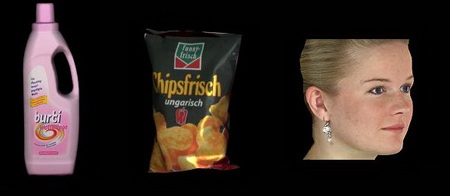

|
ÜRÜN YAZILIMLARI
RealESCAN II ve diðer tersine mühendislik yazýlým üreticileri ile son bir yýldýr yaptýðýmýz market çalýþmalarý neticesinde, Türk Üreticisine, tersine mühendislik konusunda, ihtiyacý olan tüm yazýlýmlarý ve malzemeleri vermeye karar verdik. Yýllardýr süre gelen ve bir çok CAD/CAM yazýlýmýný Türk marketine kazandýran firmamýz, bu yenilikçi alýþkanlýðýný devam ettirerek, SCANNER'inizin yazýlým desteðini de vererek, 1 yýllýk yazýlým "upgrade"lerinizi de scanner paketimize ücretsiz koyduk. Bu yazýlýmlarý, teknik olarak ve nerelerde kullanýldýðýný birlikte inceleyelim.
REALSCAN
Realscan, yazýlýmý kullanýcýsýna, son derece kullaným kolaylýðý sunar. Scanner inizin temel konfigürasyon, tarama ve hýzlý ölçü analiz bölümüdür. Bu yazýlýmda scanner inizi her þeyi ile kontrol edebilirsiniz. Basitce tarayýcýnýzýn kontrol ünitesi diyebiliriz.
Lazer ve görünüþ ayarlarý, mesafe, lazer trimlemeleri, uzunluklarý, kalýnlýðý, lazer gücü, hassasiyet, nokta yoðunluðu, obje renk ayarlarý, texture kontrolleri, kamera lens ayarlarý gibi tüm kontrol tuþlarý elinizin altýndadýr ve hepsi görseldir. Ayriyeten hýzlý ölçüm olanaklarý da sunar. Düzlemsel, açýsal, sphere, dairesel, boru ve bükümleri mesafeleri, radyüsler gibi hýzlý ve anlýk ölçü kontrolü saðlamanýza olanak tanýr.
Diðer bir yandan taradýðýnýz parçayý, radyüs daðýlýmlarý, yükseklik daðýlýmý vs. gibi komple ölçü analizine de, bu yazýlým sayesinde sokabilirsiniz.
Taradýðýnýz objeleri arþivler, görünüþleri ham data veya isteðiniz doðrultusunda düzeltilmiþ olarak saklar. Birden fazla görünüþ aldýðýnýz obje detaylarýný otomatik isim vererek, düzeltmelerinize yardýmcý olur.
PMJX, STL, PMH, OBJ, DAT, ASC, WRL gibi formatlara da dönüþtürmenizi saðlar. Tüm bu iþlemler 20 saniye gibi çok kýsa bir sürede gerçekleþir. Bu 20 sn içindeki, 7 saniyelik süre ise tarama dýr. Ýstediðiniz taktirde *.Tif dosyasý gibi format çýktýsý kabiliyetine de sahiptir. Siz firmanýzýn dýþýnda herhangi bir yerde ölçüm veya bir tarama gerçekleþtirdiðinizde, firmanýzýn e-mail line, ürünün analiz ve ölçüm resimlerinin sonuçlarýný yollayabilirsiniz. 3 - 5 MB veya çok daha fazla, gerçek tarama dosyalarýnýzý yollamanýza gerek yoktur.
Yazýlýmýn diðer bir ilginç özelliði ise, scan edilmiþ datalarýnýzý korumaya alýr. Yazýlým scannerinizin üretim seri numarasýný kendisiyle bütünleþtirir ve sadece sizin scaneriniz ile çalýþýr, ayný marka diðer REALESCAN I veya II serileri veya diðer markalar ile çalýþmama özelliðine sahiptir. Böylelikle scan datalarýnýzýn sizden izinsiz taranmamasýna, çalýnmamasýna karþý önlem alýnmýþ olur. Çýktý alýnan dosyalar ise sizin scanner seri numaranýza sahiptir, yani scan edilmiþ projeleriniz, herhangi bir yerde kullanýldýðýnda, bu taramanýn kime ve hangi firmaya ait olduðu seri numarasýndan anlaþýlýr.
Yandaki scan edilmiþ gerçek bir yüz datasýnda, yüzdeki radyüs daðýlýmlarýnýn nokta analizinde, burun uç küre (sphere) ve yüksekliklerinin eþit oranda daðýlmasýnýn sonuçlarýný görmektesiniz. Bu gerçek yüz taramasýnýn, gün ýþýðýnda, herhangi bir ortamda tarandýðýný ve referanslama yapýlmadýðýnýn da bilgisini ek olarak vermek isteriz.
Yazýlým, Windows XP pro ve Vista platformunu destekler. Bütünleþik ekran kartý olmayan, openGL destekli Pentium IV üzeri herhangi bir bilgisayarda çalýþabilir.
SLIM 3D SHAPE
REAL ESCAN II'nin bu yazýlýmýnýn temel amacý; birden fazla görünüþü otomatik birleþtirerek, yüksek hassasiyete getirmek, kusursuz 3d modeller oluþturmaktýr. Sorunsuz kullanýcý arayüzü ile kullanýcý dostu olan bu yazýlým, tamamýna yakýn görsellik içerir.
REALESCAN II den gelen görsel ve ölçümsel datalarý, kendi içersinde otomatik filtreleyerek, gereksiz datalarý yok eder ve otomatik Referanslama yaparak, 3D datalarý birleþtirir ve istendiðinde Scan assembly (scan montajlar yapar) Örneðin bir ayakkabý tabaný taramasýný, taradýðýnýz kendi ayaðýnýzýn formuna getirir. Ýþte size muhteþem ortopedik ayakkabý tabanlarý. Daha bir çok içeriði kapsayan bu yazýlým, REALSCAN Yazýlýmý ile tek bir ekranda çalýþabilme özelliði ne sahiptir.
Yazýlýmýn otomatik iþlem sýrasýnda 3 Ana unsuru ayný anda düþünerek ve oluþturarak çalýþýr;
KAYIT ETME ÖZELLÝÐÝ |
|
|
Ön Kaba Hizalama |
|
Obje datalarýnýn birleþtirmesi ve karþýlaþtýrmasý |
|
Scan datalarýnýn ayrýntýlý hassasiyet ayarlamalarý |
MESH YAPILANDIRMA |
|
|
Üçgenleme |
|
Filtreleme |
|
Hassasiyet verilerinin düzeltilmesi |
|
Alt Bölgelerin düzeltilmesi |
|
Birleþtirilen datalarýn hassasiyete göre tekrar birleþtirme kontrolü |
|
Tamamlama |
VISUALIZATION |
|
|
3D Görüntüler |
|
Data Analizleri ve kesitler |
|
Mesh düzeltmeleri Ayarlamalarý |
SLIM3D optik tarayýcýlar için kullanýlan 2D/3D kopyalama ve 2D/3D ölçü kontrolü için geliþtirilmiþ bir yazýlýmdýr. Aþaðýda belirtilen sektörler için idealdir;
- Tersine Mühendislik
- Sanal Gerçeklik
- Hýzlý prototipleme
- Kalýpçýlýk
- Saðlýk bilimleri çalýþmalarý
- Tarihi binalar ve müzeler
Renkli Texture Scan
Texture (fotoðrafsal scan) scan datalarýnýzý ayný iþlemlerden geçirerek, gerçekçi çalýþmanýza olanak saðlar.
REALESCAN II ürününde extra bir ücret karþýlýðý sunulan bu seçenek, ürününüze, renk algýlayýcý 2. veya 3. kamera takýlarak saðlanýr.
Bu opsiyon isteðe göre ürün alýmýndan sonra, herhangi bir tarihte de sipariþ edilebilir.
Real ESCAN II - 3D lazer tarayýcý ile Renkli Texture Scan
SLIM3D View
RealESCAN'ýn bir diðer Yazýlýmý SLIM 3D Viewer Editing tools, Scan ettiðiniz datalarýn, Düzeltme ve Analiz araçlarýný sunar. REALSCAN yazýlýmý ile beraber çalýþan ve bu yazýlýma entegre olan SLIM VIEWER, Kullanýcýsýna 3 ana unsuru sunar; Profesyonel 3D görüntüler ve düzeltmeler, Data Analizleri, Mesh düzeltmeleri.
Profesyonel bir yazýlým motoru kullanan ürün çok yüksek kapasiteli taramalarý bile (örneðin; 200 MB) kolayca açarak üzerinde düzeltme ve analiz yapma imkaný sunar ve kayýt etmenize olanak verir.
Data Alýþveriþi:
* Import ve export veriler 3DS, OBJ, STL, PLY, VRML, etc.
3D Display
* Görüntü hidden lines
* Görüntü inceltme, hýzlý gösterim
* Otomatik döndürme ve tanýtým prezantasyon sunumlarý
* Scan dataya, renklendirme, material atama veya parlaklýk, reflektor ayarlarý, ýþýk ayarlarý
* Görüntü ayarlarý (points, horizontal lines, vertical lines, crossed lines, flat shading, smooth (Gouraud) shading)
Data Analysis
* Scan profil ara kesitleri
* Opsiyonel renk ayarlarý, texture görüntüleri çýktýlarý, yüzey akýþ analizi
* Nokta aralýk uzaklýklarý hesaplama
Mesh Editing
* Ekleme / Silme triangles veya vertices (bilgi noktalarý)
* Özel objeleri konumlandýrma Scale, translate ve döndürme
LEIOS SCAN 2009 Advanced (EGS Solutions)
Yurt dýþýnda son aylarda kendinden sýkca söz ettiren LEIOS yazýlýmýnýn, 2009 yeni Advanced versiyonu da REALESCAN II ile isterseniz, ürün aksesuar paketinizin içinde. Profesyonel scanner yazýlýmýnda, üretiminiz ve CAD/CAM/CAE sisteminiz için ihtiyacýnýz olan tüm isteklerinizi bulabilirsiniz. Bu ürünün detaylarýný web sitemizdeki EGS Solutions bölümünden inceleyebilirsiniz.
Daha
fazla bilgi, resim, video ve pdf formatlý boþürler için týklayýnýz: www.3dcadcam.com.tr/3d/yaziayrinti.asp?idno=75
Ýrtibat:
3D
CAD/CAM Technology Ltd.
Yalý yolu Sok. Ýsmail Ergin Ýþ Merkezi No: 56/A-4
Üstbostancý Kadýköy Ýstanbul
Tel: (216) 380 39 48
www.3dcadcam.com.tr
|